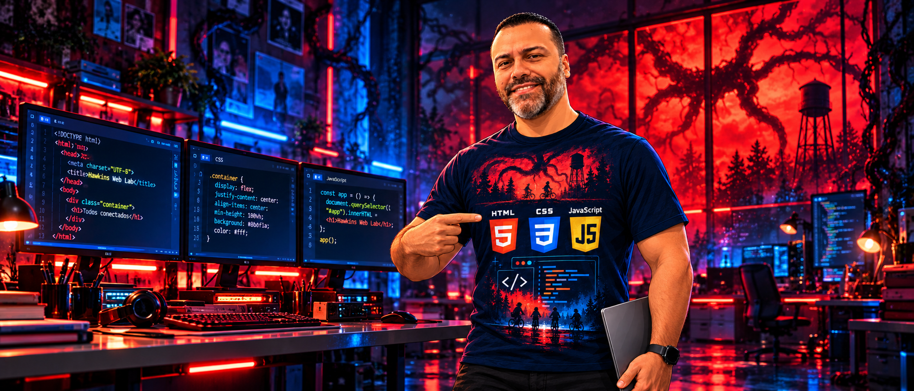

Introdução à Web
Internet × Web, navegador, cliente/servidor e os papéis de HTML, CSS e JavaScript.
Abrir aula →Área: Linguagem de Marcação
HTML constrói o mundo. CSS muda sua aparência. JavaScript faz tudo acontecer.

Internet × Web, navegador, cliente/servidor e os papéis de HTML, CSS e JavaScript.
Abrir aula →DOCTYPE, html, head, body, metadados, títulos, parágrafos e DevTools.
Abrir aula →header, nav, main, section, article e footer com significado e organização.
Abrir aula →Hexadecimal, RGB, contraste, identidade visual e psicologia das cores.
Abrir aula →img, src, alt, formatos, caminhos relativos e background-image.
Abrir aula →Seletores, CSS externo, box model, tipografia, espaçamento e estilos.
Abrir aula →Hierarquia, composição, regiões da página e preparação para wireframe.
Abrir aula →Planejamento da interface, fluxo, hierarquia e organização por blocos.
Abrir aula →Paleta, tipografia, componentes, frames, Auto Layout e prototipação.
Abrir aula →Transformação do layout visual em estrutura HTML semântica.
Abrir aula →display:flex, eixos, alinhamento, distribuição, gap, wrap e responsividade.
Abrir aula →Variáveis CSS, pseudo-classes, hover, transition, media queries e refinamento visual.
Abrir aula →Variáveis, funções, querySelector, eventos, classList e manipulação do DOM.
Abrir aula →Web Lab
Edite o código e visualize o resultado ao lado.